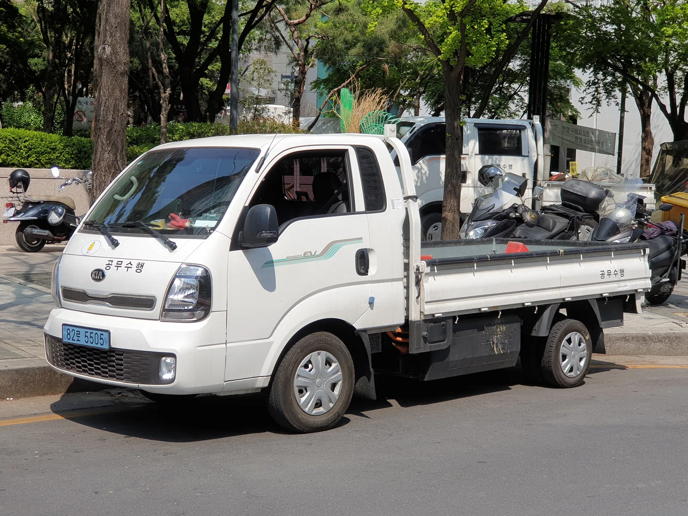
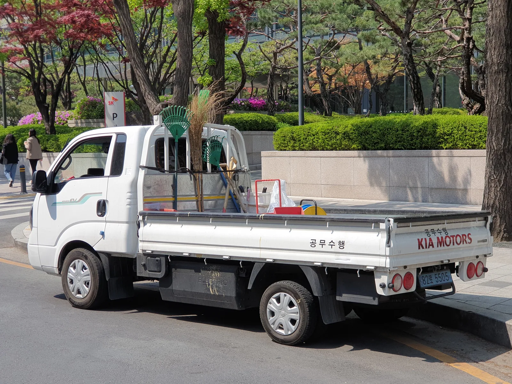
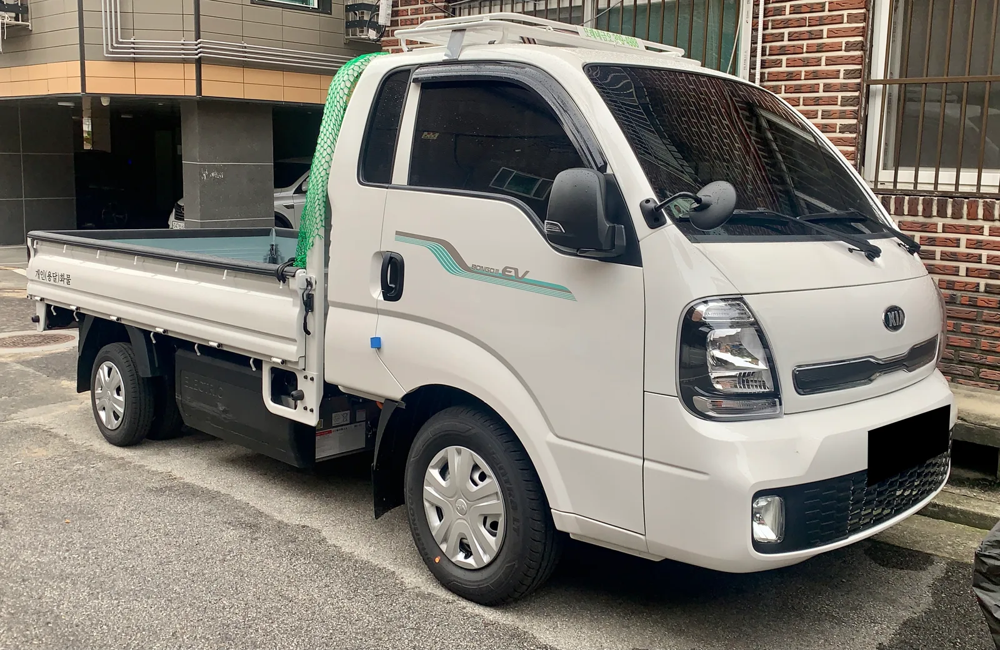

▲ 도심 주택가에 주차된 포터2 일렉트릭 탑차. 도어 하단에 초록색 그래픽과 'porter EV' 레터링이 붙어 있다 ⓒ Wikimedia Commons
"차세대 포터가 나온다는데, 지금 사면 손해 아닐까요?"
화물차 커뮤니티에 자주 올라오는 질문이다. 실제로 카프리즘은 최근 세미보닛 형태로 바뀌는 차세대(5세대) 포터의 위장차 스파이샷을 두 차례 다룬 바 있다. 하지만 그 차는 아직 출시 시점조차 확정되지 않은 개발 중인 모델이다. 정작 지금 화물차주와 소상공인이 실제로 계약서에 도장을 찍는 차는 따로 있다. 현대 포터2 일렉트릭과 기아 봉고3 EV, 현재 판매 중인 4세대 기반 전기 1톤 트럭이다.
이 기사는 차세대 세미보닛 모델과는 별개로, 지금 당장 구매 가능한 포터EV·봉고3EV의 전기 파워트레인 자체를 다룬다. 가격표부터 보조금 계산, 경유 모델 대비 유지비, 실제 화물차주들의 사용 후기까지 취합했다.
1. 지금 판매 중인 모델 — 포터EV·봉고3EV는 어떤 차인가
포터2 일렉트릭과 봉고3 EV는 사실상 같은 플랫폼을 쓰는 형제차다. 현대차·기아가 같은 파워트레인을 얹어 각각 포터·봉고 브랜드로 판매하는 구조로, 배터리 용량과 모터 출력, 주행거리 등 핵심 성능은 거의 동일하다. 다만 차체 형태(카고·탑차·냉동탑·윙바디 등 특장 옵션)와 편의사양 구성에서 차이가 난다.
📍 세미보닛 차세대 모델과는 다른 차다
카프리즘이 이전에 다룬 차세대(5세대) 세미보닛 포터는 아직 위장막을 두른 개발 단계 차량이다. 이 기사에서 다루는 포터2 일렉트릭·봉고3 EV는 현재 전시장에서 계약 가능한, 기존 보닛(캡오버) 형태의 판매 중인 모델이라는 점을 분명히 해둔다.

▲ 지자체 공무수행용으로 운영 중인 봉고3 EV 픽업. 도어 옆면에 'BONGO Ⅲ EV' 레터링이 보인다 ⓒ Wikimedia Commons
2. 가격표 — 트림별로 얼마인가
포터2 일렉트릭은 일반형 기준 4,350만원부터 시작한다. 냉동탑·윙바디 등 특장차 옵션이 붙으면 가격은 더 올라간다.
| 구분 | 트림 | 가격 |
|---|---|---|
| 일반형(2WD) | 스타일 스페셜 | 4,350만원 |
| 스마트 스페셜 | 4,485만원 | |
| 프리미엄 스페셜 | 4,645만원 | |
| 특장차 | 기본 탑차 | 4,901만원 |
| 내장탑차 | 5,025만원 | |
| 파워게이트 | 5,000만원 | |
| 전동식 윙바디 | 5,524만원 |
봉고3 EV 역시 포터와 유사한 가격 구조를 갖는다. 카고(적재함) 기본형과 킹캡·특장 옵션에 따라 가격 편차가 크며, 파워게이트·윙바디 등 특장 사양이 붙을수록 가격이 크게 뛰는 점도 포터와 동일하다.
3. 배터리·주행거리·충전 — 제원으로 보는 실체
두 차 모두 60.4kWh 리튬이온 배터리를 얹었다. 문제는 여전히 200km대 초반에 머무는 1회 충전 주행거리다.
| 항목 | 내용 |
|---|---|
| 배터리 | 60.4kWh 리튬이온 |
| 모터 출력 | 포터 184kW · 봉고3 135kW(트림별 상이) |
| 최대토크 | 40.29kgf·m |
| 1회충전 주행거리(복합) | 175~217km |
| 도심 주행거리 | 200~248km |
| 고속도로 주행거리 | 144~178km |
| 급속충전(80%) | 100kW 급속기 기준 약 54분 |
✅ 구매 전 확인할 것
· 표시 주행거리는 상온·경량 조건 기준이라 적재 시, 겨울철에는 실제 주행 가능 거리가 더 줄어든다
· 배차·배송 반경이 편도 70~80km를 넘는 노선이라면 중간 충전 계획을 세워야 한다
· 연식이 지날수록 배터리 열화로 주행가능거리가 줄어든다는 사용자 보고가 있어, 보증 기간과 배터리 관리 이력을 확인할 것
4. 보조금 — 실구매가는 얼마까지 내려가나
전기 화물차 보조금은 승용 전기차보다 후하다. 국고 보조금만 최대 1,800만원 수준이며, 여기에 지자체 보조금이 더해지면 실구매가는 크게 낮아진다.
| 구분 | 금액 |
|---|---|
| 차량 출고가(스타일 스페셜) | 4,350만원 |
| 국고 보조금 | 약 -1,800만원 |
| 지자체 보조금(지역별 상이) | 추가 차감 |
| 실구매가 | 2,000만원 중후반대 |
지자체 보조금 규모와 잔여 물량은 지역마다 다르고 수시로 소진되기 때문에, 계약 전 반드시 거주지 기준으로 직접 조회해야 한다. 무공해차 통합누리집 바로가기

▲ 후면부에서 본 봉고3 EV. 적재함 하부에 'ELECTRIC' 표기가 새겨져 있다 ⓒ Wikimedia Commons
5. 경유 모델과 비교한 유지비 — 얼마나 아낄 수 있나
연료비만 놓고 보면 전기 모델의 이점이 뚜렷하다. 경유 포터2를 연간 2만km 주행 기준으로 계산하면, 2026년 평균 경유값(리터당 약 1,845원) 기준 연간 약 427만원(월 약 36만원)의 유류비가 든다.
| 구분 | 월 연료비 | 연간 연료비 |
|---|---|---|
| 경유 포터2 | 약 36만원 | 약 427만원 |
| 포터2 일렉트릭(심야 완속충전 기준) | 약 15만원 안팎 | 약 180만원 안팎 |
실제로 심야 시간대(밤 11시~아침 9시) 완속충전을 활용하면 월 1,000km 주행 기준 전기요금이 1만원 안팎까지 낮아진다는 실사용 후기도 있다. 다만 전기차 전용 보험료 차이와 배터리 감가 요소는 별도로 감안해야 하며, 절감폭은 충전 요금제와 주행 패턴에 따라 달라질 수 있다.
📍 초기 가속력은 전기 모델이 우위
전기 모터 특유의 즉각적인 토크 덕분에, 적재 상태에서의 초반 가속력은 경유 모델보다 우수하다는 평가가 많다. 신호 출발이 잦은 도심 배송 업무에서는 이런 특성이 체감 만족도로 이어진다.
6. 화물차주·소상공인 실사용 후기 — 장단점
실제 화물차주들의 후기를 종합하면, 유지비 절감에는 대체로 만족하지만 주행거리와 충전 부담에 대한 불만이 반복적으로 나온다.
| 장점 | 단점 |
|---|---|
| 경유 대비 연료비 절반 이하로 절감 | 여전히 200km대에 머무는 주행거리 |
| 적재 상태에서도 즉각적인 가속력 | 연식이 지날수록 체감 주행가능거리 감소 |
| 심야 완속충전 시 월 전기요금 1만원대까지 절감 가능 | 장거리·다구간 배송 시 중간 충전 시간 소요 |
| 엔진 소음·진동이 없어 주택가 새벽 배송에 유리 | 급속충전 인프라가 지역별로 편차 |

▲ 개인 용달화물로 운영 중인 봉고3 EV. 도어에 'BONGOⅢ EV' 그래픽과 함께 지붕에 루프랙을 얹었다 ⓒ Wikimedia Commons
도심 근거리 배송, 짧은 순회 노선을 반복하는 소상공인에게는 유지비 절감 효과가 뚜렷하지만, 장거리·다구간 화물 운송이 주 업무라면 여전히 주행거리와 충전 시간을 감안한 스케줄 관리가 필요하다.
7. 변수 — 중국산 전기트럭의 등장
포터EV·봉고3EV의 독무대였던 국내 1톤 전기트럭 시장에 새 변수가 등장했다. BYD의 T35는 환경부 인증 기준 상온 복합 주행거리 344km(도시 주행 395km)로, 포터EV·봉고3EV(211km)보다 100km 이상 길다. 출력도 150kW(약 200마력)급으로 국산 모델의 135kW급을 웃돈다.
📍 그러나 보조금이라는 변수가 있다
BYD T35는 2026년 정부의 강화된 전기차 보조금 지급 평가 명단에 포함되지 못했다. 제작사의 사후관리 역량과 국내 투자 기여도 평가에서 밀린 결과로, 보조금 없이는 실질적인 가격 경쟁력을 갖추기 어렵다. 결국 시장의 향방은 BYD의 자체 할인 정책과, 국내 소비자가 보조금 유무를 어떻게 받아들이느냐에 달려 있다.
주행거리만 놓고 보면 포터EV·봉고3EV가 뒤처지는 건 분명하지만, 보조금까지 포함한 실구매가와 사후관리(A/S 네트워크) 접근성에서는 여전히 국산 모델의 우위가 크다는 게 업계의 대체적인 평가다.
8. 요약
포터2 일렉트릭·봉고3 EV는 차세대 세미보닛 모델과는 별개로, 지금 당장 살 수 있는 전기 1톤 트럭이다. 출고가는 4,350만원부터 시작하지만, 국고·지자체 보조금을 더하면 실구매가는 2천만원 중후반대까지 내려간다.
경유 모델 대비 연료비는 절반 이하로 줄어들고, 적재 상태에서도 즉각적인 가속력을 낸다. 다만 1회 충전 주행거리는 여전히 200km대 초반에 머물고, 연식이 지날수록 체감 주행거리가 줄어든다는 지적도 있다.
도심 근거리 배송·순회 노선 위주라면 유지비 절감 효과가 확실하지만, 장거리·다구간 운송이 잦다면 충전 스케줄을 감안해야 한다. BYD T35 같은 중국산 모델이 주행거리로 도전장을 내밀고 있지만, 보조금과 A/S 네트워크 측면에서는 여전히 포터EV·봉고3EV가 앞서 있다는 평가다.